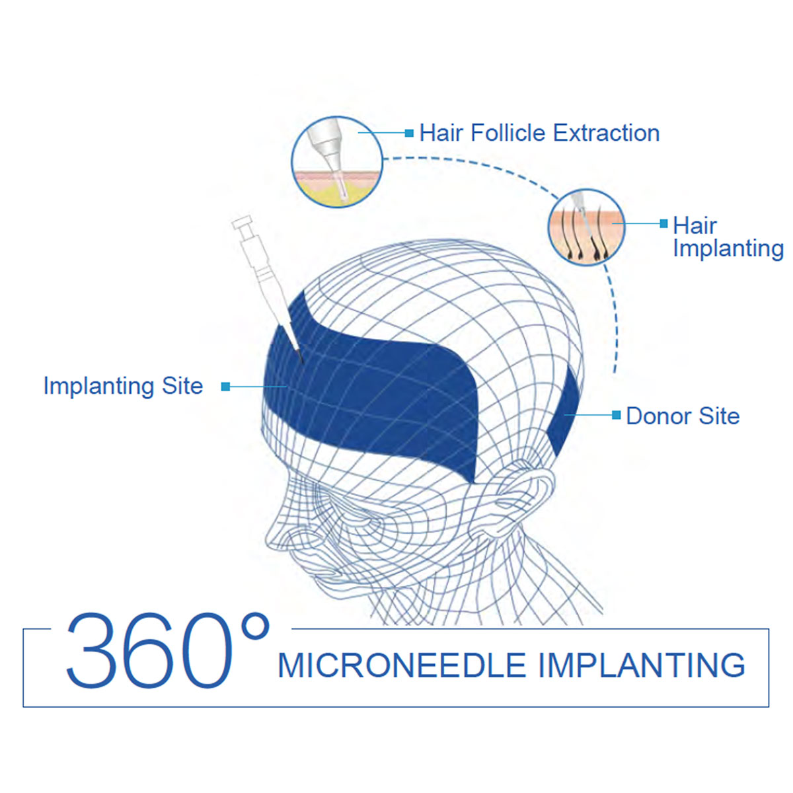

Scar hair transplants are commonly misunderstood as simple lines or marks on the skin. They are actually areas of damaged tissue that remain after the skin heals from an injury. Scars can be raised or flat, smooth or bumpy, pinkish-brown or have a depression in the center where it was torn open.
Scars are caused by the body's natural healing process and can occur after an injury or as a result of surgery. When a scar appears on the scalp or face, it has a negative impact on one's mood and social interactions. If you have a visible scar in your brow, beard, or any other area of your head, scar treatment can help you cover visible scars and restore hair growth in the affected area.

A hair transplant is a cosmetic procedure in which healthy hair is transplanted from a 'donor' area, usually the back of the head, to a 'recipient' area where it is needed. When someone gets a scar in an area that requires hair to cover, it's important to let the doctor examine them personally to see if there are any blood circulation issues that could lead to more problems later on.
Following a thorough examination and consultation, our experts recommend a suitable course of action. These surgeries, which produce quick and permanent results, are performed using a variety of surgical options such as FUE, FUT, and Barley's Microneedle method.
Scar treatment employs cutting-edge technology, including the use of an Implanter Pen to implant grafted hair follicles. Implanter pens are ideal for implanting grafts, and Barley experts can smoothly control the density and direction of the implanted follicle.
A hair transplant may be an effective treatment for scars on the scalp, brows, and beard. While long-term treatments such as laser therapy or cryotherapy cannot reduce scars, hair transplant is an excellent alternative that may also help improve the appearance of other aspects of your face.
Our experts specialize in treating various types of scars
Cover the linear scar left from traditional FUT hair transplant procedures with natural-looking hair growth.
Restore hair in areas affected by burn injuries with our specialized microneedle technique.
Cover scars from accidents, surgeries, or trauma with precise hair follicle placement.
See the results that have earned our patients' lasting confidence


Real patients, real confidence restored

Patient proudly showing their natural-looking scar coverage outcome

Patient celebrating their remarkable new look

Patient showcasing their refreshed, natural hairline

Patient revealing their impressive before-and-after transformation

Overseas visitor delighted with their exceptional results

Patient thrilled with their beautiful new hair

Satisfied patient with our dedicated medical team

Patient demonstrating their successful restoration
Modern, comfortable clinics designed to put you at ease from the moment you arrive

Equipped with the latest technology

Relax in our comfortable waiting area

Certified sterile environment

Confidential and professional discussions

Relaxing space for post-procedure rest

Warm welcome from our team
Honest answers to the questions patients ask most
Real stories from patients who successfully covered their scars
"Thumbs up to their team for delicately covering the scar on my head that affected my self-esteem. It feels like I never had it because doctors covered it so well that it looks natural. Thank you again for your work."
"I thought the staff were very friendly and accommodating. They were quick and thorough with the preparations and the surgery, while long and uncomfortable was manageable because the doctors were very attentive to my pain levels."
"Needed a fuller brow and cover a scar I had after a small incident. Went to Barley and got it covered with simple scar treatment. There is no scar visible and I have nice and dense brows. Best decision ever."
Click to copy contact information
15810155700
+86 13730143529
hairtransplant@qq.com

Everyone's hair loss journey and solution are unique due to a variety of factors. Our hair restoration experts will assist you in determining the root cause and the best solution for your hair restoration plan. If you have any questions, please ask; we are happy to assist.